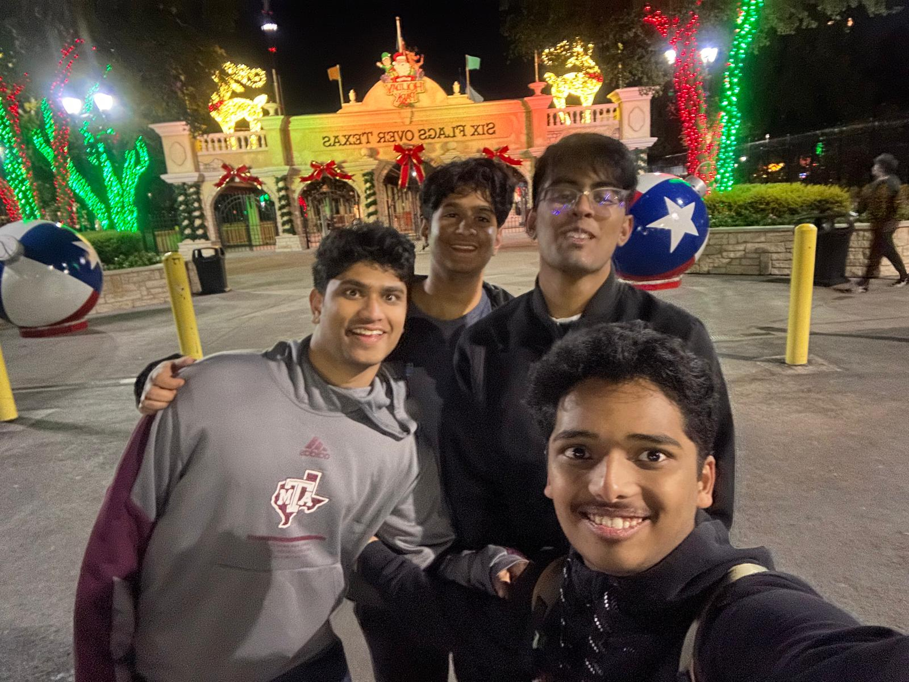
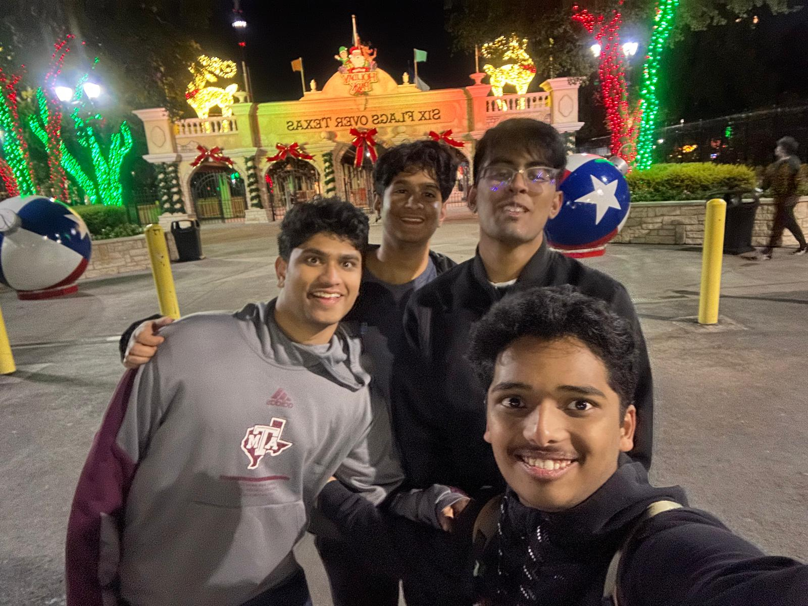

Howdy! I am Pranav Harwadekar, a Computer Science Honors student at Texas A&M University. I am an avid problem solver and lifelong learner who is eager to continue growing professionally, and personally. Having previous experience across various industries, leading research, and product development. I interned at McKesson (Supplylogix) as a Software Engineering Intern this past summer, where I built large-scale forecasting pipelines using PySpark and MLflow to optimize pharmacy inventory across 10,000+ sites. Additionally, I have completed data analytics externships with Beats by Dre, and Webacy Inc using Web3. I eventually want to launch a security startup focusing on smart contract risk assessment.
On campus, I currently lead the Autonomous Navigation team for Texas A&M's international rover project, where I build ROS2-based navigation and Stereo SLAM systems. My past research experience includes undergraduate ML projects through the Aggie Research Program and hyperspectral imaging algorithm development in CUDA and C++. I've also developed and launched apps on the App Store.
In addition to my technical skillset, I am developing my leadership skills by serving as a Cengage Student Ambassador, Engineering Honors Executive Committee Service Chair, formerly served as UNICEF USA National Youth Ambassador. All of these experiences helps me grow more professionally and sets me up for future success. Lastly, I am also currently completing personal projects as a Software Engineering Fellow at Headstarter AI, building AI-powered products with React, Next.js, and Vercel.

 
